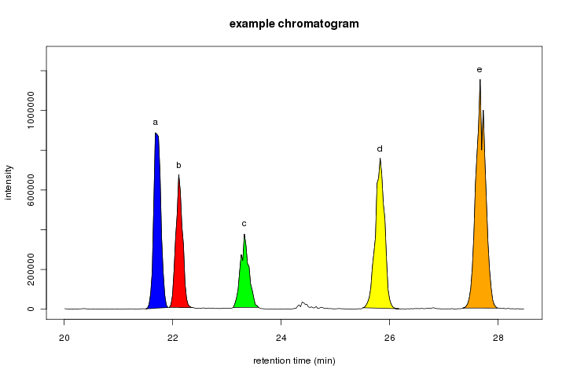
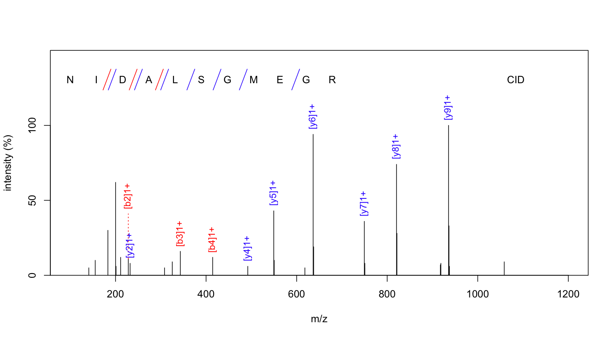
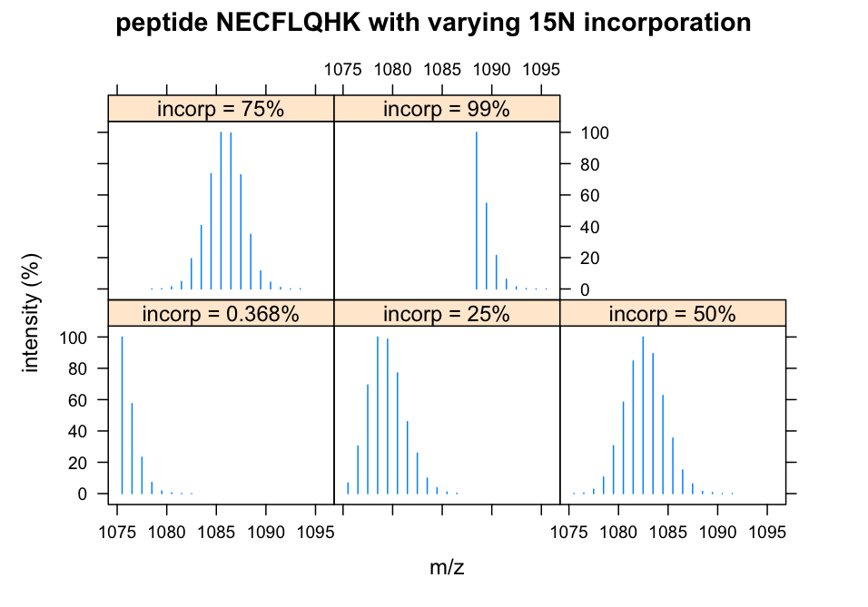
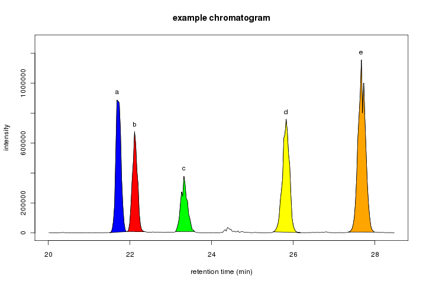
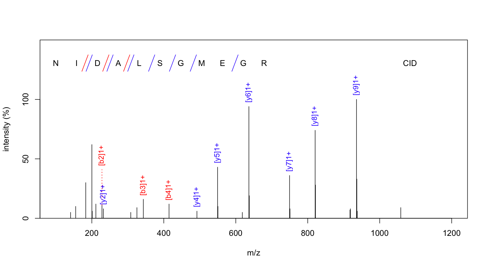
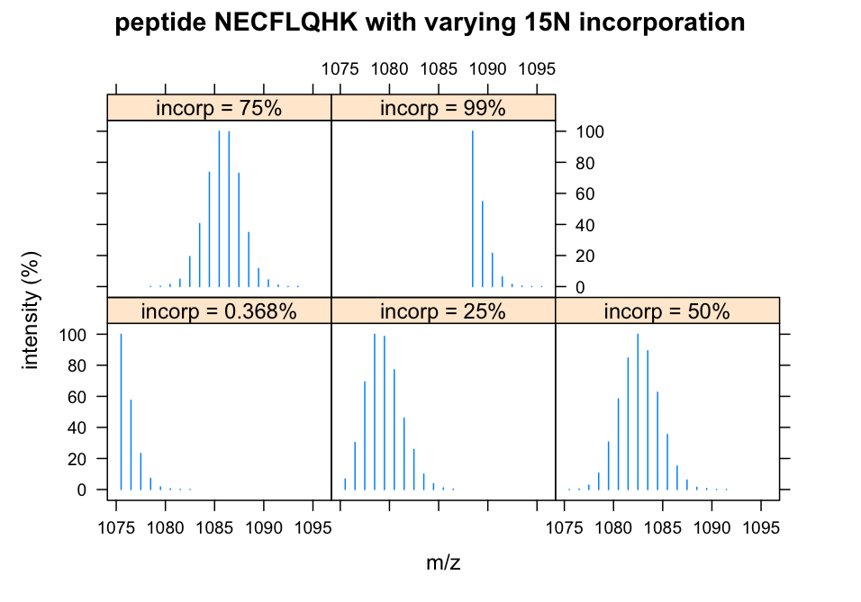

OrgMassSpecR (Organic Mass Spectrometry with R) contains functions to assist with instrument operation and data analsis.
This project is in the alpha stage of development.
The current version is on the R-Forge OrgMassSpecR project summary/download page.
ConvertPeptide: Convert single amino acid codes to an elemental formula or three letter codes.
DeadVolume: Calculate the internal volume of a defined length of tubing.
Digest: Cleave an amino acid sequence (a protein or peptide) according to enzyme specific rules and calculate the precursor ion m/z values.
DrawChromatogram: Plot a chromatogram, color the area under specified peak(s), and calculate the peak area(s).
ExchangeableAmides: Determine the number of backbone amide hydrogens given a protein/peptide sequence. Used in hydrogen-deuterium exchange experiments.
FlowTime: Calculate the time required for a liquid to flow through a defined length of tubing.
FragmentPeptide: Determine the b- and y-ions or c- and z-ions produced by the fragmentation of a peptide by tandem mass spectrometry.
IsotopicDistributionHDX: Simulate the isotopic distribution of a peptide undergoing hydrogen-deuterium exchange.
IsotopicDistributionN: Simulate the isotopic distribution of a nitrogen-15 labeled peptide.
MolecularWeight: Calculate the molecular weight of an organic molecule.
MonoisotopicMass: Calculate the monoisotopic mass or monoisotopic m/z value of an organic molecule.
PeptideSpectrum: Plot a peptide fragmentation mass spectrum, with the b- and y-ions or c- and z-ions identified.
SpectrumSimilarity: Generate a head-to-tail plot of the two mass spectra and calculate a similarity score.
 




